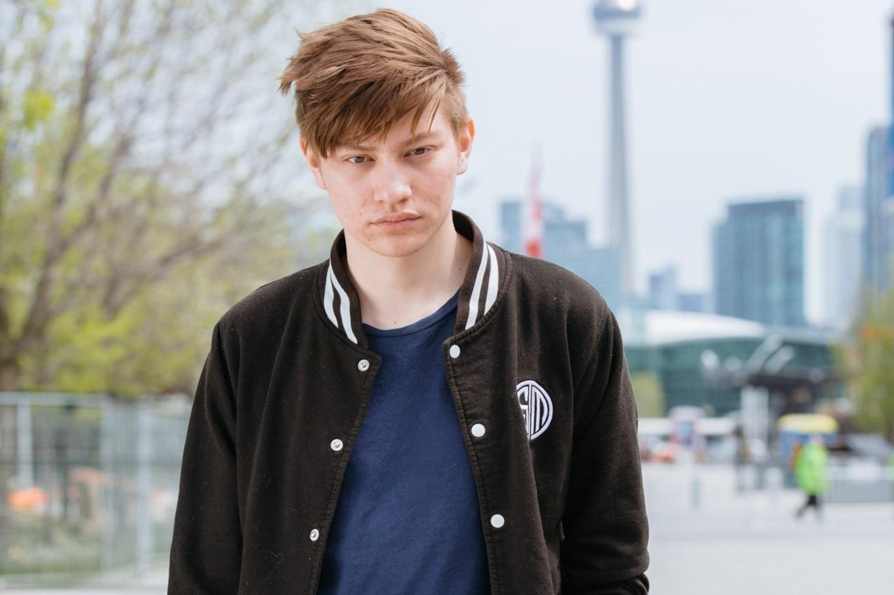

| 1. Hungrybox Character(s): Jigglypuff Player Info |
|
| 2. Leffen Character(s): Fox Player Info |
 |
| 3. Mango Character(s): Falco Fox Player Info |
|
| 4. Axe Character(s): Pikachu Player Info |
|
| 5. Wizzrobe Character(s): Captain Falcon Player Info |
|
| 6. Zain Character(s): Marth Player Info |
|
| 7. aMSa Character(s): Yoshi Player Info |
|
| 8. Plup Character(s): Sheik Player Info |
|
| 9. iBDW Character(s): Fox Player Info |
|
| 10. Mew2King Character(s): Marth Player Info |
The organization that creates this list every year used to be MIOM or Melee it On Me a popular group that used to sponsor big tournaments when the scene was more grassroots and needed support.
Now the group that creates the top 100 players of the year is the company Red Bull as they sponsor many players that compete at tournaments.
To see the top 100 players of 2013-2019 you can click here.